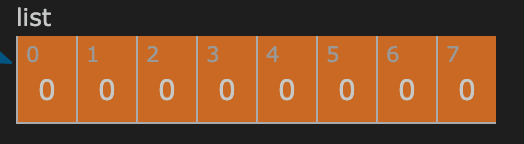

题目
Given a list of daily temperatures T, return a list such that, for each day in the input, tells you how many days you would have to wait until a warmer temperature. If there is no future day for which this is possible, put 0 instead.
For example, given the list of temperatures T = [73, 74, 75, 71, 69, 72, 76, 73], your output should be [1, 1, 4, 2, 1, 1, 0, 0].
Note: The length of temperatures will be in the range [1, 30000]. Each temperature will be an integer in the range [30, 100].
解法
题目不算复杂，简单来说就是对每个元素都执行往后查找更大元素的操作，若有则返回步距，无则返回0，最后把返回结果的集合输出。
暴力法
Step 1
题目给定的输入数组如上图所示，T = [73, 74, 75, 71, 69, 72, 76, 73]初始化结果容器,result = []
Step 2
在计算第一个元素相对应返回值时，实质上是红框内元素做比较。 第二个元素的值74大于第一个元素的值73，跳出循环，往result中加入两者index之差，也就是1.result = [1]
Step 3
同理，由于第三个元素的值75大于第二个元素的值74，满足跳出循环条件，往result添加1. result = [1,1]Step 4
这次循环中的过程稍显特殊，由于list[3] < 75, 不满足跳出循环条件，继续往右遍历，直到抵达list[6]时找到76，才跳出循环。往result中追加的值为，6 - 2 = 4.result = [1,1,4]
Last Step
由于最后一个元素永远返回0，所以最后一个需要判定的元素是倒数第二个。在这次循环中，list[6] < list[-1], 所以result追加0并跳出循环，然后再追加一个0(对应最后一个元素).result = [1,1,4,...,0,0]
这段代码结束。
代码
1 | def dailyTemperatures(T): |
以上就是最简单粗暴的穷举法的代码。
分析
优点：足够简单粗暴，能初步实现功能。
缺点： 时间复杂度是n^2，重复的切片操作会占用大量内存，存在大量重复操作。
在这一步的计算过程中，list[3]和list[4]对应的结果其实被重复计算了。 随着输入数组长度的增加，这种重复计算所消耗的时间会呈指数增长，因此这种简单穷举法是过不了leetcode的检测的。
单调栈法
穷举法不行，那只能上数据结构了，这里我们需要引入一个名为单调栈的数据结构。通过维护这个单调栈，我们可以高效快速地求出答案。
什么是单调栈
讲真我之前也没接触过这个概念，对着leetcode官方答案现学的，理解难免有所偏颇，望海涵。
顾名思义，单调栈就是一个栈内元素单调递增或单调递减的栈。
初始化一个单调栈很简单（为了贴合题目，这里会把单调栈设定为单调递减）：
1 | result = [34,38,42,45,61,65] |
然后就是往该单调栈中进行入栈操作：
Step 1
同理，题目给定的输入数组如上图所示，T = [73, 74, 75, 71, 69, 72, 76, 73]
初始化结果容器,result = [0]*len(T)

Step 2
空栈，直接入栈。需要注意的是这里入栈的实际上并非是元素的值，而是其索引。
Step 3
由于此时栈中已有元素，入栈前，首先对比新元素和栈顶元素在list中对应元素的值的大小。
听起来或许很绕，但在这个循环中其实就是对比list[0]和list[1]的值的大小。
list[0] = 73, list[1] = 74.
由于T[1] > T[0],不满足入栈条件，先弹出栈顶元素0,再入栈新元素1,两者相减则为result[0]的值。
所以在此时,result = [1,0,0,0,0,0,0,0], stack = [1].
Step 4
同理,由于T[2] > T[1],不满足入栈条件，先弹出栈顶元素1,再入栈新元素2,两者相减则为result[1]的值。
所以在此时,result = [1,1,0,0,0,0,0,0] stack = [2].
Step 5
在这个循环中， 首先遍历到list的第四个元素，即i = 3.
由于list[3] < list[2] ( 71 < 75), 3直接入栈。
同理，4也直接入栈成功。 此时各变量如图所示：
当 i = 5时，因为list[5] > list[4], 弹出栈顶元素4并根据5 - 4 = 1可得 result[4] = 1.
然后i = 5继续尝试入栈，由于list[5] > list[3] (72 > 71),result[3] = 5 - 3 = 2.
这时终于满足入栈条件，5入栈成功。
通过以上一系列计算，在维护stack的单调性的同时，result[3] 和 result[4]的值依次被算出。
依照这个流程result[2]会在下一次循环中被算出，而最后残留在栈中的索引的对应值则会保留默认值0.
代码
1 | def dailyTemperatures_optimzed(T): |
分析
在维护单调栈的过程中，栈内每个元素的值都会被计算有且仅有一次，极大地减少了多余的计算步骤，并且由于只需要储存有限几个索引在栈中，内存空间的占用也较为有限。
虽然引入一个新的数据结构看似会引入更高的复杂度，但是对比起穷举法需要的双指针，单调栈法只需专注于栈顶元素，实现得更为优雅简洁。
耗时对比
1 | import random |